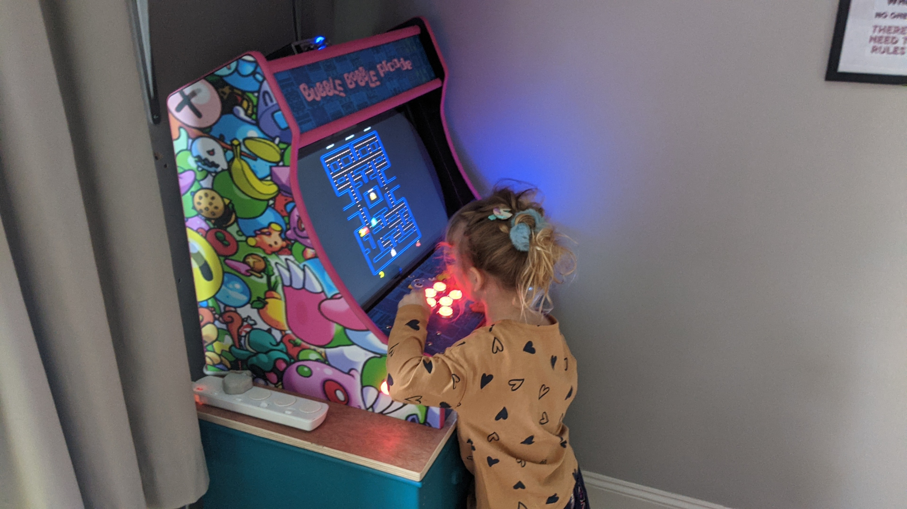
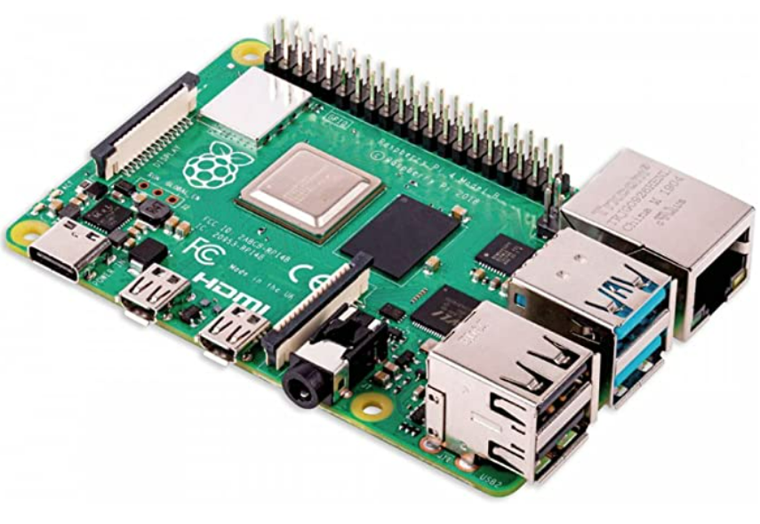
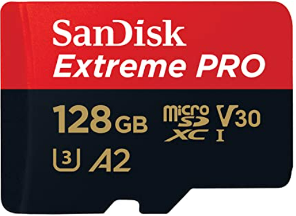
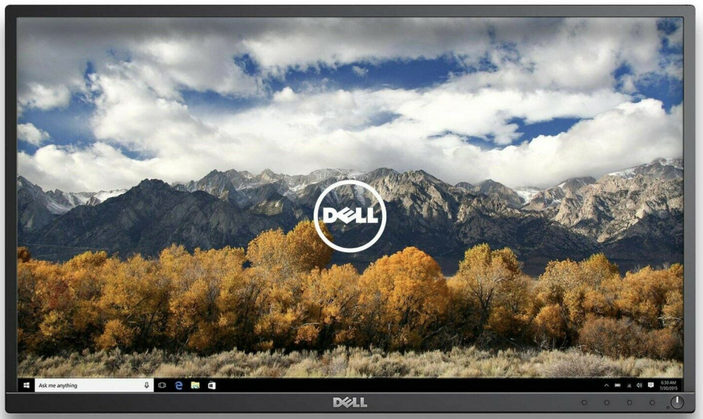
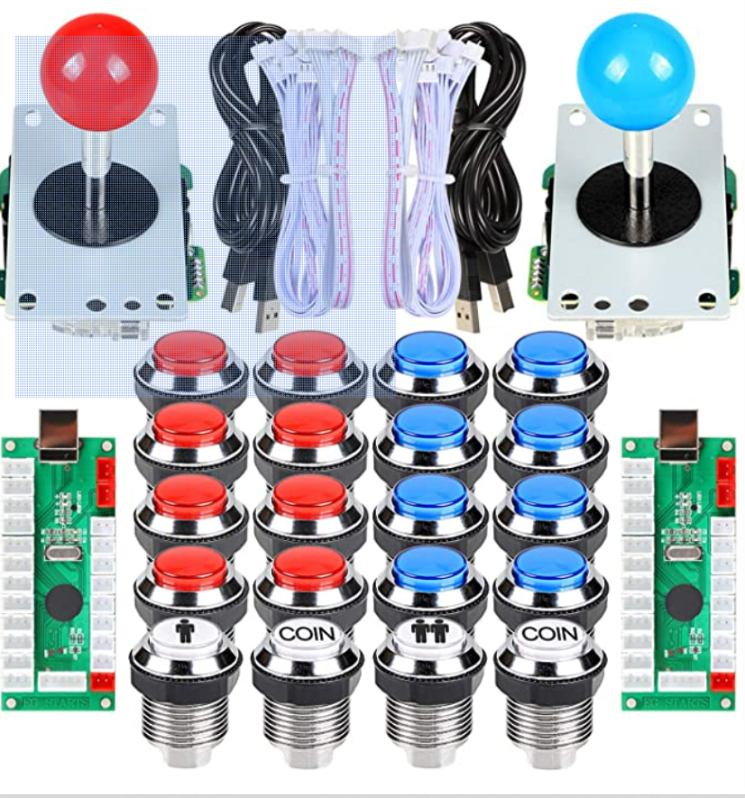
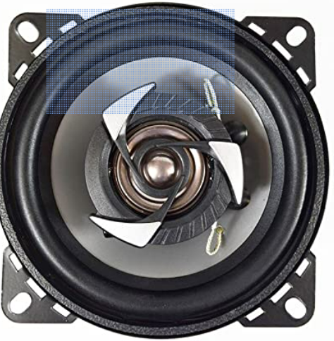
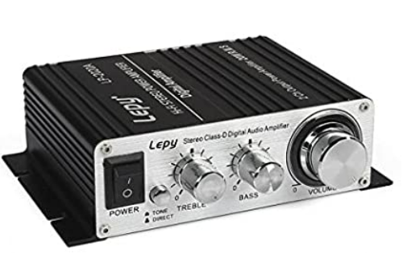

A Rough Guide to Building a Retro Pie Bar Top Arcade Game Machine
Over the last few months, working towards an ominous (self-imposed) Christmas deadline, I've been working on building a Retro Pie Bar Top Arcade Game Machine. This is "for the kids", but pretty obviously also for me to satisfy a sense of nostalgia and a fondness for arcade machines which was probably driven by the scarcity of opportunity to play on them in my youth.
What I wasn't expecting, was how authentic the experience is. The 8 / 16 bit audio playing over the installed car stereo speakers and amp, along with light from the display and back-lit buttons and colourful retro pixel-art style graphics comes together brilliantly.
While I haven't kept close track, I think the machine has cost in all around £400 to build, all parts and cabinet included (some second hand). This was more than I expected when I started out on the project, but not by enough to put me off completing the project. The biggest investment was time, grabbing an hour here and there to spend on the cabinet, installation and OS configuration.

(My eldest playing some old school PAC-MAN)So, being a rough guide, here are the parts required for building a Retro Pie Bar Top Arcade Game Machine with some information about each. This isn't a step by step guide since the process was more compositional than sequential for me. Maybe next time it would be now I know more about the process. Really I just found myself working on the parts I could until the whole thing came together.
Raspberry Pi Computer
You'll need a computer to host the Retro Pie operating system. While not your only option, many people opt to use a Raspberry Pi. They are affordable and powerful enough to play games from a range of gaming consoles.
I used a Raspberry Pi 4 (8GB) model, which has been plenty powerful enough for the games I wanted to load on.

SD Card
You'll need an SD card. I used this SanDisk Extreme PRO 128GB, though you'd likely be fine with something much smaller (say 32GB) as once you've installed the 5GBish Retro Pi OS, the roms are tiny in modern computing terms.

Retro Pie
Retro Pie is the Linux operating system which bundles Emulation Station, which allows you to run the 'roms' of the games you want to load onto the system.
You can download the free Retro Pie OS free of charge here. You'll find installation instructions here. You'll need to be comfortable using a shell to run a few commands. After initial set up, I continued configuration over an SSH connection, later using VSCode with the Remote SSH extension (connecting using this extension will install a lightweight server on the Raspberry Pi to aid operability with VSCode).
A great and very necessary feature of the OS is that it has 'Kids Mode' (as well as 'Full' and 'Kiosk' mode). You can turn this on and off in the UI, but I've found it easier to edit in the config files over SSH rather than remember the joystick / button combinations to enter / exit the mode.
Links:
The Games
You'll want to obtain some 'roms'. The files that contain the games you want to play. Google is your friend here.
Bartop Arcade Cabinet
The cabinet I used was made by a company called BitCade. They appear to currently only sell through Ebay. Obtaining the cabinet took some time due to them having a lead time of a couple of weeks, not helped by me then not finding time to be able to work on the cabinet part of the project for a further few weeks and then realising I had a part missing. The Ebay seller I bought from was helpful though and we eventually got there.
The cabinet is melamine MDF. The quality is OK. The cuts are good but the material its self is soft and you don't want too many attempts at inserting / removing screws as they will eventually lose their purchase. I ended up putting a couple of extra screws in various places to make the thing a bit more robust.
BitCade sell the cabinets with a variety of vinyl graphics, which fit well and were of decent quality. I went for the Bubble Bobble graphics since my daughters are young and I thought it would go down well!
You'll also want some T-Molding roll for the edges of the cabinet as this is not included. As you can see, I went for pink to match the artwork.
Links: https://bitcade.co.uk/
Monitor
I went for a cabinet that supported a 24" monitor. There are some options on aspect ratio. I went for 16:9.
This second-hand Dell P2417H did the trick. My first attempt at going really cheap on the monitor didn't work out so well when the model I went for turned out to be so old that it was too deep to fit in the cabinet without some additional wood work. As it also had a very loud fan (monitors have fans?) I decided to cut my losses and get the Dell below.

Arcade Joystick and Buttons
For the controls, including 2 x joysticks and buttons, I took a chance on this set from Amazon. Knowing a bit more now than I did then, these are not the best quality. There are better (more expensive brands) of buttons. For this set, while the joysticks feel decent, the buttons feel a bit cheap and 'clicky clacky'. That said, they work fine. Compatibility, instructions, wiring up was easy enough, and I can always replace them in the future.
What you get is the sticks, the buttons, the circuit boards to wire up (this isn't that hard, just follow the paper instructions to plug the wires into the right sockets), and a USB socket to connect to the Raspberry Pi as you would any other game pad.
Retro Pie has its own instructions for mapping buttons / controls when setting up.

Amplifier and Speakers
For audio, I went for these speakers and this amp. There wasn't much science behind these decisions. I just needed them to be cheap, fit look OK and sound alright.
These were in the end wired up via the 3.5 mm jack to the HDMI adapter that connected the Raspberry Pi to the monitor. The Raspberry Pi does have an audio jack for a direct connection, but I had some technical problems here, in that no sound played when connected directly to the Raspberry Pi. I never solved this as I was able to work around by connecting into the afore mentioned HDMI adapter with an audio jack.


An On / Off Switch
Since the Raspberry Pi doesn't have an on off switch, you have to cut the power manually. You can shut down Retro Pie before this if you want, but I can't really expect my kids to do this. My solution was to add a switched extension lead into the set up as pictured above (with some child safe plug covers) so the machine can simply be powered up / down.
The Final Result
So the project has been a success. The kids love it (the youngest maybe more than she should!). There were a few bumps along the way with a little troubleshooting required. I'll try to update this post later with more about that.
If I did it again with more time I'd like to make the cabinet myself, and would research the joystick and buttons a bit more. The screen could do with a surround which I will get around to making to make it look a bit more authentic.